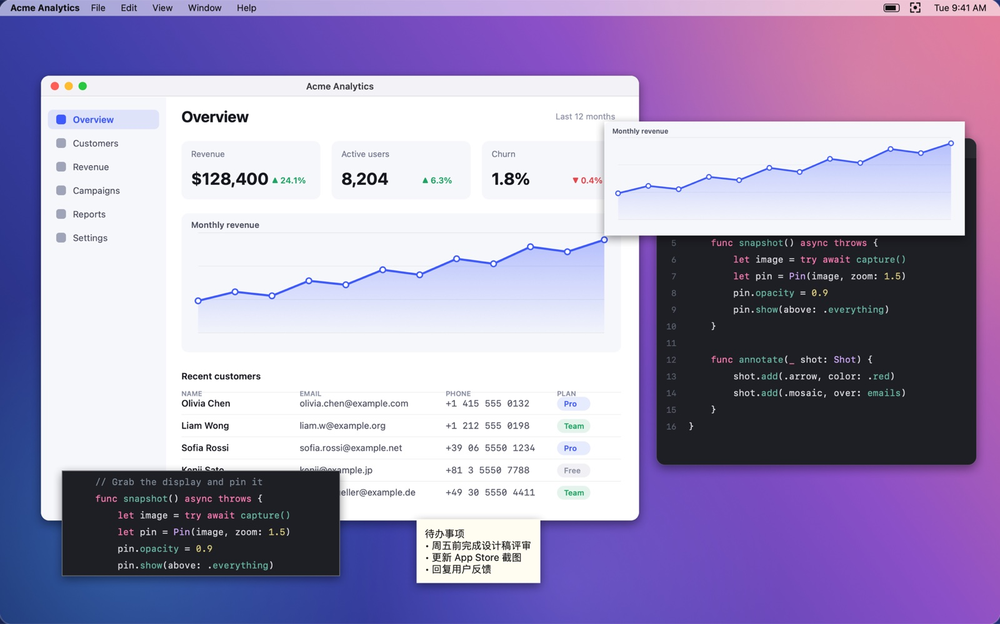

截下来
悬停自动选中窗口，拖拽可以框选任意区域，多台显示器同样可用。
- 像素放大镜，选区边缘精确到 1 像素
- 按 C 复制指针下的颜色值
- 回车复制到剪贴板，⌘S 保存成文件
⌥⌘A开始截图
悬停自动选中窗口，拖拽可以框选任意区域，多台显示器同样可用。

箭头、文字、序号直接画在截图上。邮箱和电话，一抹就打上马赛克。
画错了按 ⌘Z 撤销，⇧⌘Z 重做。

截图后按 ⌘T，它就悬浮在所有窗口之上。对着它写代码、填表格，不用来回切窗口。
全局快捷键可以在“设置 › 快捷键”里换成你顺手的组合。
应用不建立任何网络连接，也不会上传任何内容。
没有统计、广告和崩溃上报，也没有第三方服务。
没有账号系统，不用注册登录，装好就能用。
截图只保存到你选择的位置，贴图历史留在应用自己的容器里。